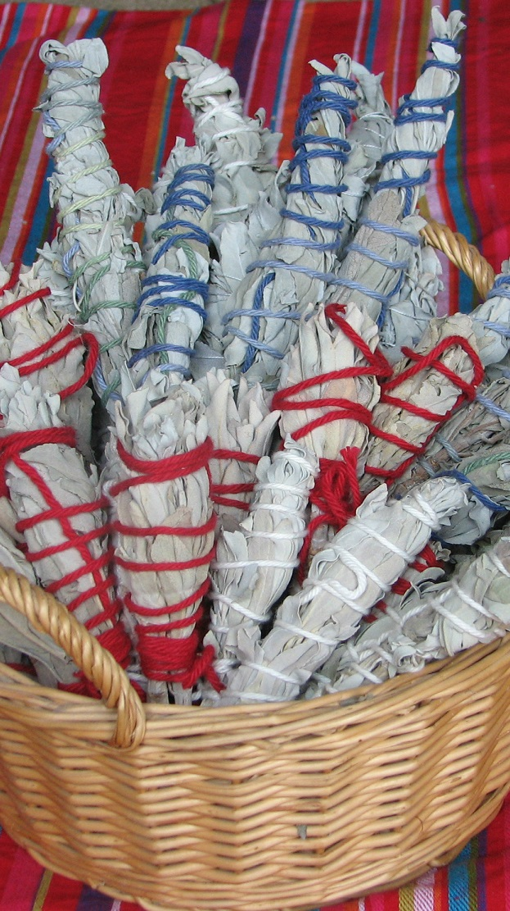

- GrowMoongarden Witch GardenConcoctIngredients Uses
Floor Washes
Floor washes have been used for centuries to draw and banish specific energies from the home. Boil water and mix with herbs. Let sit until only warm, strain, and wash floors with intent. I always recommend washing floors by hand.
Money Drawing
Cinnamon
Nutmeg
Allspice
Clover
Or, a simple Basil Wash in the entryway can be used to welcome prosperity into your home.
Love
Rose Petals
Dried Orange Peel
Banishing Negativity
Simply add a small amount of vinegar to hot water and sprinkle salt across the doorways. If you're worried about plants near doors, you can substitute eggshells.
Smoke Cleansing
Sage is traditionally used for smoke cleansing to clear out negativity. To invite positivity into your home, smoke cleanse with sweet grass. 
"Have nothing in your home that you do not know to be useful or believe to be beautiful." —William Morris